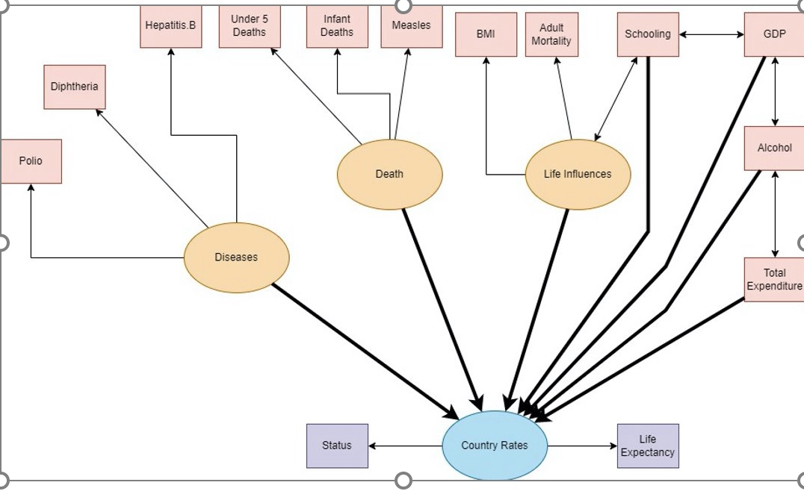

Projects
What some of the explanatory variables that lead to heart disease in patients in the future
- The goal for this project was to use the data we found on the CDC website in 2021 Annual
Survey to predict what were some of the explanatory variables that lead to heart disease in
patients in the future. To find out the variables we will create a multi-logical model. We will
also try to use the forward selection, backward elimination, and best subset to find the predictor
variables for the heart disease (response variable). The final model will be constructed using
the variables: Age, Stroke, BMI, Heart_Attack, HRT_Disease, Gen_Health and Sex. Since
this was a random survey, the results can be used to infer to a larger population, probably to
population of the world.
GDP and Life Influences Drive the Life Expectancy and Development of a Country.
-
The ability of a government to know what factors impact the life expectancy and development of
their country is valuable and can impact the overall well-being of people in a country. Our goal
was to be as accurate as possible as well as have statistically significant data so we could form a
conclusion. We hypothesized that schooling and adult mortality will be the biggest drivers of life
expectancy and the development of a country

Model the linear relationship between weight and height, equivalent test number of meals per day, and number of hours of exercise per week.
- Many research has shown that the height of an individual determines the weight factor of the individual.
I wanted to figure out the correlation between the components for the undergraduate students at the University of St. Thomas (population) that are studying the statistic 220 courses (sample size).
The main goal is to find out which of the explanatory variables is a stronger predator to the response variable. Ho: The model is ineffective. Ha: The model is effective.